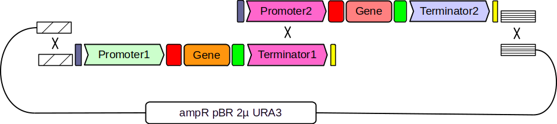
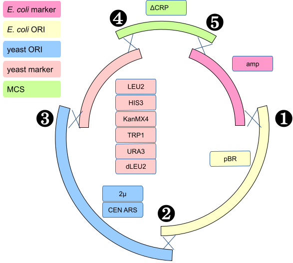
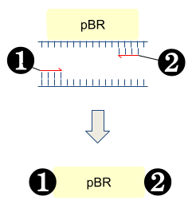
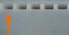
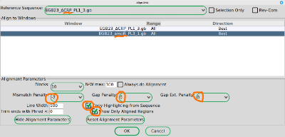
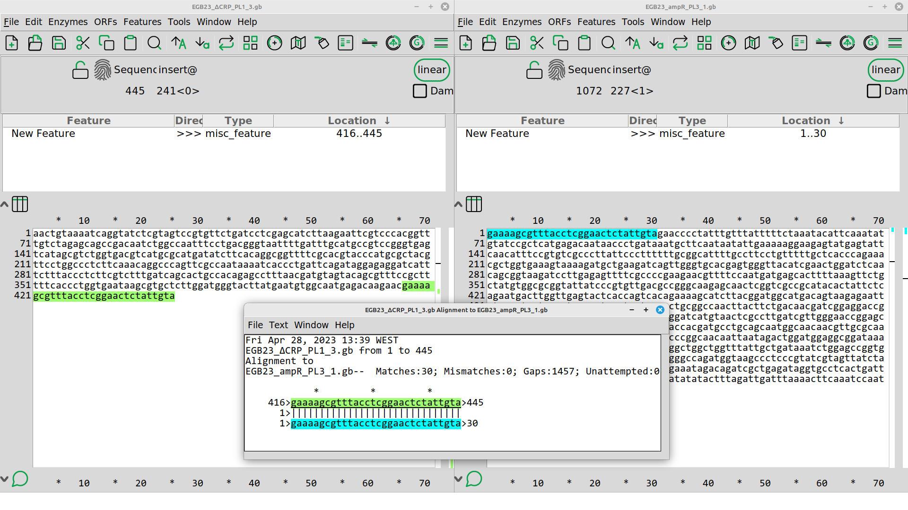
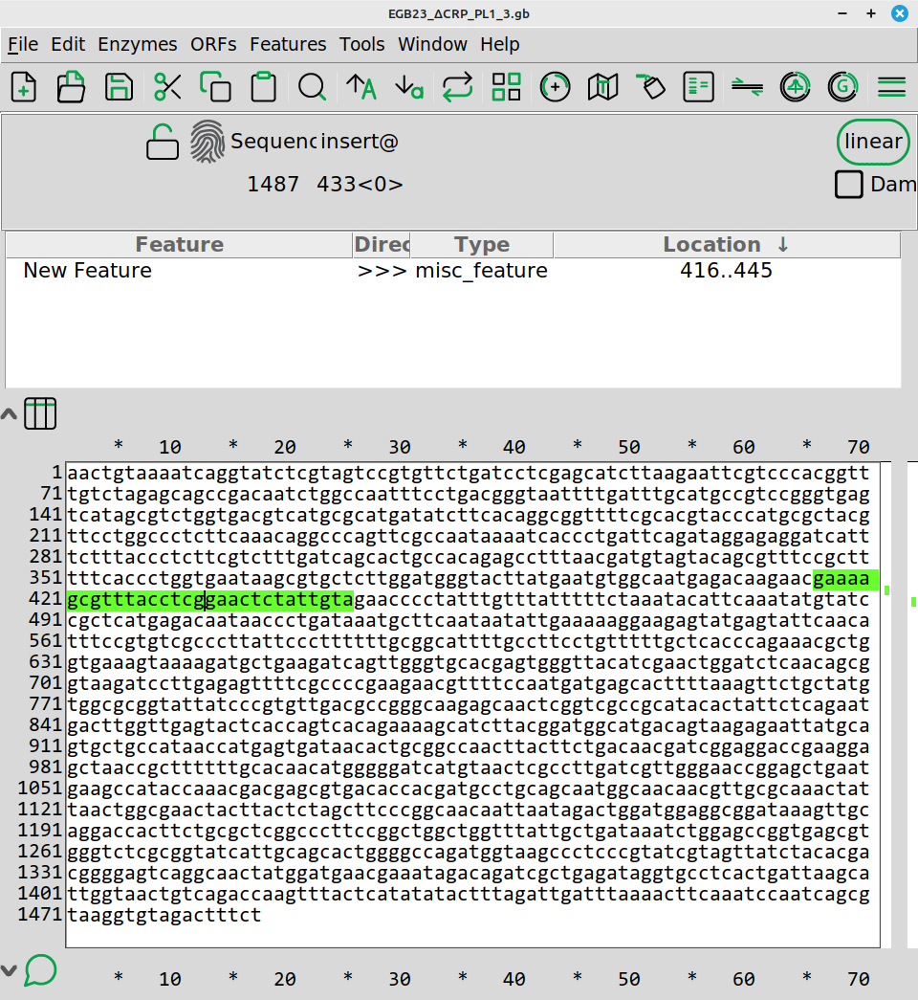

In-vivo assembly of pTA cloning vectors in Saccharomyces cerevisiae
Background
Our research group (MEC) has developed a protocol for the assembly of metabolic pathways in-vivo that we call the Yeast Pathway Kit (see publication). We use this protocol for construction and expression of large metabolic pathways in baker’s yeast Saccharomyces cerevisiae.
We start by assembling a single gene expression cassette or TU (transcriptional unit). Briefly, single genes are cloned between a promoter and a terminator by in-vivo homologous recombination as in the figure below:
Figure 1

The three linear fragments (Promoter, Gene and Terminator are typically PCR products while the long, curved fragment is a linearized plasmid.
The linearized plasmid is important as it provides elements for replication and selection in both E. coli and yeast.
Multi gene metabolic pathways are later built by linking several TUs together in a second assembly step as in the figure below.
Figure 2

In the original publication, a plasmid called pYPKpw was used. The pYPKpw has the following functional parts:
- ampR (selection marker for E. coli)
- pUC (ORI, origin of replication for E. coli)
- 2µ (ORI, origin of replication for S. cerevisiae)
- URA3 (selection marker for for S. cerevisiae
- ΔCRP (a partial, inactive E. coli cyclic AMP receptor protein or CRP gene)
The ΔCRP gene is inactive and only provide a multi-cloning site (MCS).
The pathways that we make are usually only functional in Saccharomyces cerevisiae, but we need to transfer the pathway to E. coli so we can obtain larger amounts of higher quality DNA to be used for analysis or transformation.
It would be useful to expand the range of plasmids for maintaining pathways in the Yeast Pathway Kit.
- Having more selection marker for for S. cerevisiae would make it possible to combine several genes or pathways in the same cell.
- The 2µ ORI gives a certain copy number of the vector. Having lower or higher copy number would make it possible to fine tune gene expression.
- The pUC origin of replication (ORI) results in a high copy number of the vector in E. coli. This may lead to genetic instability in this organism. A lower copy number ORI could provide more stability.
If the new vectors are made out of modular standardized parts, making new vectors in the future is easier.
Plan
We conceived a series of plasmid vectors called pTAx where x is a number from 1 to 10 (at the moment) made from five functional elements (Table 1, columns). They are all similar, but differ in the selection markers and yeast ORI. The CEN_ARS yeast origin of replication gives one or two copies of the plasmid in yeast.
The pTAx plasmids should have a lower copy number in E. coli since they have the pBR origin of replication including the ROP gene.
During the lab course, we will try to make three new plasmids from the Table 1 below. The specific vectors to be made can be found in the course Google Spreadsheet in the “TRAFO_plan” tab.
Table 1. pTAx vectors
| Name | E. coli marker | E. coli ORI | yeast ORI | yeast marker | MCS | ||
|---|---|---|---|---|---|---|---|
| pTA1 | ampR | pBR | 2µ | LEU2 | ΔCRP | ||
| 🔥 | pTA2 | ampR | pBR | CEN_ARS | LEU2 | ΔCRP | |
| pTA3 | ampR | pBR | 2µ | HIS3 | ΔCRP | ||
| 🔥 | pTA4 | ampR | pBR | CEN_ARS | HIS3 | ΔCRP | |
| pTA5 | ampR | pBR | 2µ | KanMX4 | ΔCRP | ||
| pTA6 | ampR | pBR | CEN_ARS | KanMX4 | ΔCRP | ||
| 🔥 | pTA7 | ampR | pBR | 2µ | TRP1 | ΔCRP | |
| pTA8 | ampR | pBR | CEN_ARS | TRP1 | ΔCRP | ||
| pTA9 | ampR | pBR | 2µ | URA3 | ΔCRP | ||
| pTA10 | ampR | pBR | CEN_ARS | URA3 | ΔCRP |
Each plasmid is made from in-vivo homologous recombination between five PCR products made by the students (see figure below).
Figure 3

Each of the genetic elements in the table above comes from a specific plasmid and is obtained through PCR.
In the Google spreadsheet tab named “PCR_plan” you can find your group designation together with the template plasmid you should use and the primers (Primer1 and 2). The numbers for Primer1 and Primer2 refer to positions in the MEC group primer list.
Strategy
PCR products are made with PCR primers that incorporate specific flanking sequences on each end of the PCR product. This is accomplished by introducing extra sequences in the 5’ part of the primer that do not anneal to the template (tails).
The figure below show PCR with tailed primers.
Figure 4

These extra sequences will enable homologous recombination between the DNA fragments. There are five different sequences s1..s5 (Table 2). They were designed with the R2oDNA designer tool.
Table 2
| Icon | Designation | Sequence (30 bp) |
|---|---|---|
| ❶ | s1 | AATCCAATCAGCGTAAGGTGTAGACTTTCT |
| ❷ | s2 | ATCGTATCTGCTGCGTAAATAGTAGTCAAC |
| ❸ | s3 | TAAAATCTCGTAAAGGAACTGTCTGCTCTG |
| ❹ | s4 | AACTGTAAAATCAGGTATCTCGTAGTCCGT |
| ❺ | s5 | GAAAAGCGTTTACCTCGGAACTCTATTGTA |
The vector is assembled by homologous recombination between the s1..s5 sequences as shown in Figure 1.
Figure 5
s1
-|ampR|30
| \/ yMRK = LEU2, HIS3, KanMX4, TRP1 or URA3
| /\ s2 yORI = 2µ or CEN_ARS
| 30|pBR|30
| s1 \/
| /\ s3
| 30|yORI|30
| s2 \/
| /\ s4
| 30|yMRK|30
| s3 \/
| /\ s5
| 30|ΔCRP|30
| s4 \/
| /\
| 30-
| s5 |
-----------------------------------------
In the figure above the crosses (X) indicate homologous recombination. This happens because identical sequences are present in two different DNA fragments.

LAB1 (3h, Week 1)
Each student have three tasks:
- Make a plasmid DNA preparation by the alkaline lysis method.
- Dilute the plasmid DNA for PCR
- Prepare a PCR reaction to amplify a part of the plasmid
1. Plasmid DNA preparation
We will use the a alkaline lysis plasmid miniprep protocol. The teacher has prepared E. coli cultures in liquid or on solid medium beforehand. Cultures with each plasmid were grown in or on LB with antibiotics for selection of the plasmid.
2. Dilution of plasmid DNA
- Pipette 1000 µL (1 mL) ultra-pure water into a clean Eppendorf tube
- Mark this tube well so that you can identify it.
- Vortex the tube with plasmid DNA so that you are sure that all DNA was dissolved.
- Transfer 5 µL of the plasmid DNA to the tube with 1 mL water This will make a 5 µL/1000 µL = x200 dilution.
- Vortex the tube with the x200 plasmid dilution so that the content is well mixed.
- Put the tube with concentrated plasmid DNA into the freezer.
- Leave the tube with your diluted plasmid DNA on the bench and continue with the next step: “Preparation of a PCR reaction”.
3. Preparation of a PCR reaction.
Each student should prepare one PCR reaction. Each student should put a PCR tube in a rack for PCR tubes. Write the number on top of the tube indicated in the Google Spreadsheet (see the Google spreadsheet tab: “PCR_tubes”). Add the reagents in the order given below. Pipette very carefully, there is only a limited amount of reagent which is expensive.
PCR amplification (50 µL):
- 33 µL MM2 + LBx6 mixture (This is a green solution that has both PCR components and loading buffer)
- 5 µL primer 1 (5 µM)
- 5 µL primer 2 (5 µM)
Transfer 7 µL of the x200 diluted plasmid from the previous step to the tube.
PCR primer sequences for pTAx vectors:
>1750_s1 s1 tm=52.856
AATCCAATCAGCGTAAG
>1749_s2 s2 tm=56.264
ATCGTATCTGCTGCGT
>1748_s3 s3 tm=53.243
TAAAATCTCGTAAAGGAACT
>1747_s4 s4 tm=52.983
AACTGTAAAATCAGGTATCT
>1746_s5 s5 tm=54.852
GAAAAGCGTTTACCTCG
>1745_s1r s1r tm=52.348
AGAAAGTCTACACCTTAC
>1744_s2r s2r tm=54.01
GTTGACTACTATTTACGCA
>1743_s3r s3r tm=55.045
CAGAGCAGACAGTTCC
>1742_s4r s4r tm=53.771
ACGGACTACGAGATAC
>1741_s5r s5r tm=51.462
TACAATAGAGTTCCGAG
>1352_HIS3fp_pTA
TAAAATCTCGTAAAGGAACTGTCTGCTCTGAACACAGTCCTTTCC
>1351_HIS3rp_pTA
ACGGACTACGAGATACCTGATTTTACAGTTTTTTTTCTCGAGTTCAAGA
>1350_KanMX4fp_pTA
TAAAATCTCGTAAAGGAACTGTCTGCTCTGGACATGGAGGCCC
>1349_KanMX4rp_pTA
ACGGACTACGAGATACCTGATTTTACAGTTCAGTATAGCGACCAGC
>1348_TRP1fp_pTA
TAAAATCTCGTAAAGGAACTGTCTGCTCTGTTTGCCGATTAAGAATTCG
>1347_TRP1rp_pTA
ACGGACTACGAGATACCTGATTTTACAGTTGATCTTTTATGCTTGCTTTTC
>1346_URA3fp_pTA
TAAAATCTCGTAAAGGAACTGTCTGCTCTGGATTCCGGTTTCTTTGAAA
>1345_URA3rp_pTA
ACGGACTACGAGATACCTGATTTTACAGTTGGTAATAACTGATATAATTAAATTGAA
>1344_CEN_ARSfp_pTA
ATCGTATCTGCTGCGTAAATAGTAGTCAACACGGATCGCTTGC
>1343_CEN_ARSrp_pTA
CAGAGCAGACAGTTCCTTTACGAGATTTTACTTTTCATCACGTGCTATA
>1196_Pbr.FW
AATCCAATCAGCGTAAGGTGTAGACTTTCTCTGTCAGACCAAGTTTACT
>1195_Pbr.REV
GTTGACTACTATTTACGCAGCAGATACGATCTCGTTTCATCGGT
>1113_Amp.fw.nw
GAAAAGCGTTTACCTCGGAACTCTATTGTAGAACCCCTATTTGTTTATTTTTCTA
>988_Amp.FW Amp.FW (do not use!)
GAAAAGCGTTTACCTCGGAACTCTATTGTAAACCCTGATAAATGCTTC
>987_Amp.REV Amp.REV
AGAAAGTCTACACCTTACGCTGATTGGATTTGAAGTTTTAAATCAATCTAAA
>986_Pbr.FW Pbr.FW
AATCCAATCAGCGTAAGGTGTAGACTTTCTCTCGTTTCATCGGTAT
>985_Pbr.REV Pbr.REV
GTTGACTACTATTTACGCAGCAGATACGATCTGTCAGACCAAGTTTACT
>984_Micron.FW Micron.FW
ATCGTATCTGCTGCGTAAATAGTAGTCAACGATCGTACTTGTTACCCAT
>983_Micron.REV Micron.REV
CAGAGCAGACAGTTCCTTTACGAGATTTTAGATCCAATATCAAAGGAA
>982_dLeu.FW dLeu.FW
TAAAATCTCGTAAAGGAACTGTCTGCTCTTATATATATTTCAAGGATATACCATT
>981_dLeu.REV dLeu.REV
ACGGACTACGAGATACCTGATTTTACAGTTTAAGGCCGTTTCTGAC
>980_Leu2.FW Leu2.FW
TAAAATCTCGTAAAGGAACTGTCTGCTCTGTTAACTGTGGGAATACTC
>979_Leu2.REV Leu2.REV
ACGGACTACGAGATACCTGATTTTACAGTTTCTACCCTATGAACATATTC
>978_Crp.FW Crp.FW
AACTGTAAAATCAGGTATCTCGTAGTCCGTGTTCTGATCCTCGAGC
>977_Crp.REV Crp.REV
TACAATAGAGTTCCGAGGTAAACGCTTTTCGTTCTTGTCTCATTGCC
Material list (Lista de material)
For the instructor to demonstrate pipetting etc.
- Food coloring
- P20
- P200
- mastermix with loading buffer
This is for the technicians that prepare the lab.
3 turmas, 1 turma por semana, 3 semanas:
Material para todas as turmas:
- Pipetas P1000, P100, P20 e P10
- Pontas amarelas, azuis e brancas estéreis, NOVOS
- Eppendorfs 1.5 mL NOVOS
- Marcadores
- 4 caixas de esferovite para gelo
- 4 tubos eppendorf 2 mL com 1.8-2.0 mL tampão P1 (12 tubos no total, marcados “P1”)
- 4 tubos eppendorf 2 mL com 1.8-2.0 mL tampão P2 ---- ” ---- ” ------ ” ---- “P2”
- 4 tubos eppendorf 2 mL com 1.8-2.0 mL tampão P3 ---- ” ---- ” ------ ” ---- “P3”
- 4 tubos Falcon 50 mL com ~20 mL etanol seco 99% (qualidade pura para DNA, marcados EtOH 99%)
- 4 tubos Falcon 50 mL com ~20 mL etanol 70% (qualidade pura para DNA, marcados EtOH 70%)
- 4 tubos Falcon 50 mL com ~20 mL Agua ultrapura estéril (4 tubos no total, marcados ddH2O)
- 4 tubos eppendorf com 1 mL tampão 1x TE (4 tubos no total, marcados 1xTE)
- Tubos PCR
- Suportes para Tubos Eppendorf
- Suportes para Tubos PCR
- Centrífuga para tubos eppendorf
Não é necessário preparar P1, P2 ou P3, temos no LGM.
LAB2 (3h, Week 2)
This practical class consists of two separate tasks:
- Analyze plasmid DNA and PCR products by gel electrophoresis
- Prepare an agarose gel
- Assemble the PCR product sequence
Agarose gel electrophoresis of plasmid DNA and PCR products
Each student has a tube with plasmid DNA and a PCR product from Class 1. Unfreeze the plasmid DNA if this was not already done.
- Add 8 µL 6 x loading buffer LBx6 to your plasmid DNA plasmid DNA (This is the big tube!).
- If necessary, spin the tube for ~2 seconds to collect the liquid at the bottom.
- Put the gel in the gel tray.
- Add more buffer (if needed) until the gel is just submerged.
- Add 5 µL of the plasmid DNA to an empty well, start with the leftmost well.
- All group members should load their plasmid
- Take note of where your samples are.
- Load the gel with 4 µL of the content of the PCR tube in the same way, All group members should load their PCR product.
- The teacher will help you to put the gel in the electrophoresis chamber.
- The teacher to load the molecular weight marker.
- Apply the electrical field as soon as you are done.
- The electrophoresis last around 30 - 40 min at 100 volts in the Bio Rad Mini Sub Cell.
- When the gel run is completed, the teacher with take a picture using a transilluminator.
Figure 6

Preparation of an Agarose gel
- While the gel is running you should prepare a gel for the next group. The class should make 350 mL 0.8 % w/v agarose gel in 1 x TAE buffer.
- Use the balance to weigh agarose in a small weighing boat.
- Prepare 1x TAE buffer from the stock if necessary.
- Add agarose and 300 mL 1 x TAE buffer to an 1 L glass cup.
- Heat the cup in a microwave oven for 5 x 1 min, stir with a glass pipette in between. The resulting gel should be like water with no suspended particles.
- Wait for the gel to cool down
- Pour the gel in the gel tray indicated by the teacher.
Post stain (The instructor does this)
- Put the gel in TAE + Midori Green, incubate 15-30 min
- Take picture
In-Silico simulation of the PCR product
- The template sequence is in the course dropbox
- The primer numbers used can be found in the course Google Spreadsheet (same as used in LAB1)
- The primer sequences can be found in the table above.
- Use WebPCR to simulate your PCR product .
Material (Por turma, 1 turma por semana x 3 semanas):
- Tips amarelas (novos!)
- Tips brancos (novos!)
- 4 suportes para tubos Eppendorf
- 4 suportes para tubos PCR
- microcentrifuga
- Agarose para geis (>4g)
- Tampão TAE x 1
- Tampão TAE stock
- 1 proveta 1L (plastico)
- 1 copo 2L (plastico)
- 1 Schott vazio 1L com tampa
- 4 provetas 100 mL
- 4 erlenmeyers 100 mL
- Fonte de eletricidade
- 1 tina de eletroforese (Bachman, LGM)
- Barquinhos de pesagem (plástico, LGM)
LAB3 (3h, Week 3)
This practical class consists of three separate tasks.
- Prepare a DNA mixture
- Yeast transformation using the DNA mix
- In-silico assembly final plasmid sequence.
Preparation of DNA mixture
Each student should prepare a mixture of the PCR products obtained in the previous class. The teacher has pooled all the successful PCR reaction in their respective categories:
- ampR
- pBR
- ΔCRP
- CEN_ARS / 2µ
- HIS3 / URA3 / LEU2 / TRP1
The specific PCR reactions used can be found in the “DNA_pool” tab of the google sheet. There is one 1.5 mL Eppendorf tube with each component. There is only one tube of each kind, so share the tubes in a practical way between groups.
Each student should prepare the DNA mixture outlined in the “TRAFO_plan” tab of the Google sheet. Note that some students prepare a mix with five components (we call this the “+” mix) and some with four components and water (we call this the ∆ mix). The delta (∆) mix has all the components except the pBR fragment.
- Calculate how much is needed of the + and ∆ mixes (count the number of students with each mix)
- Each student need 40 µL of mixture = 5 components * 8 µL
- Prepare the mixture in a fresh Eppendorf tube and mix well.
- Prepare one fresh Eppendorf tube for each student.
- Mark these tubes with the “TRAFO#” numbers. These numbers can be read from the Google sheet, tab “TRAFO_plan”
- Divide 40 µL mix into the correct tubes with the correct numbers.
This is the only material available, so be sure to pipette the correct volumes and do not contaminate the tubes as other students will use them.
Yeast transformation
Each student should make one transformation.
- Take two new 1.5 mL Eppendorf tubes.
- Transfer 1 mL ultra pure water to one tube and put it on ice. Cold water is needed later in the protocol.
- Transfer 50 µL of the cell suspension to the other tube. Mark this tube with your “TRAFO#” number.
- Centrifuge the cells for 20s at the highest speed.
- Remove supernatant with a P200 pipette. Leave the cell pellet at the bottom of the tube, do not resuspend.
- Add 30 µL of your DNA mix to the tube with cells.
- Add 150 µL PLS (PEG-LiAc-ssDNA). Be careful and pipette slowly as PLS is sticky. Using a P1000 pipette might be easier than using a P200.
- Vortex the tubes until the cells are well resuspended.
- Put the tubes in a floating tube rack at 42°C.
- Incubate for 40 min.
- During this time you should do the DNA assembly on your computer.
- Mark a Petri dish with the appropriate solid medium with your “TRAFO#” number and name. Write on the back side, not on the lid.
- Add about 1/2 mL glass spheres (~10-15 spheres) to one empty Petri dishes with solid medium.
- Remove tube from water bath after 40 min and put on ice for at least 2 min.
- Spin tube for 20s at highest speed.
- Remove supernatant with a P200 pipette. Leave the cell pellet at the bottom of the tube.
- Add 100 µL cold water (from the tube on ice, step 1) and resuspend with the pipette by slowly pipetting up and down.
- Transfer all of the cell suspension to yout Petri dish.
- Spread the cells by shaking the glass spheres (The samba method).
- Incubate the plates upside down for 2-3 days at 30°C.
In-silico assembly final plasmid sequence.
The sequences share 30bp of flanking homologous sequences Figure 5. You should manually joint the fragments for your plasmid (see Google spreadsheet, tab TRAFO_plan).
Fragments are joined by homologous recombination between the 30bp flanking DNA sequences (s1-s5).
Replicating this process in ApE is very easy. Open two fragments that are next to each other. The order can be deduced from Figure 3.
Figure 8

Align the two sequences using the Tools>Align sequences … function. Use the settings marked in Figure 9.
Figure 9

Verify that the end of one sequence is identical the beginning of the other.
Figure 10

Copy a part of the second sequence to the first window in such a way so that only one copy of the shared sequence remains.
Continue this process until you have a complete plasmid.
Submit the plasmid sequence at the Google spreadsheet, tab PCR_plan.
Material list for preparation
Material para todas as turmas (1 turma por semana, 3 semanas):
-
cultura de levedura 50 mL ⇒ 1 mL (20 trafos)
-
PLS 150 µL x 4 * 5 = 3 mL (~ dois tubos).
-
suportes para tubos eppendorf
-
suportes para tubos FALCON 50 mL
-
banho maria 42°C
-
microcentrífuga
-
Pipetas P1000, P200, P20
-
Tubos Eppendorf novos
-
4 barcos para tubos eppendorf
-
4 caixas de esferovite para gelo
-
Pontas amarelas estéreis
-
Pontas azuis estéreis
-
1L Água ultrapura autoclavado
-
4 tubos FALCON 50 mL com ~5-10 mL de esferas de vidro (~5 mm) estéreis
-
12 tubos FALCON 50 mL novos
-
50 placas de meio SD sólido (suficiente para toda as turmas)
meio SD sólido:
- 6.7 g/L Yeast Nitrogen Base (YNB) WITHOUT AMINOACIDS
- 20 g/L glucose
- 20 g/L Agar